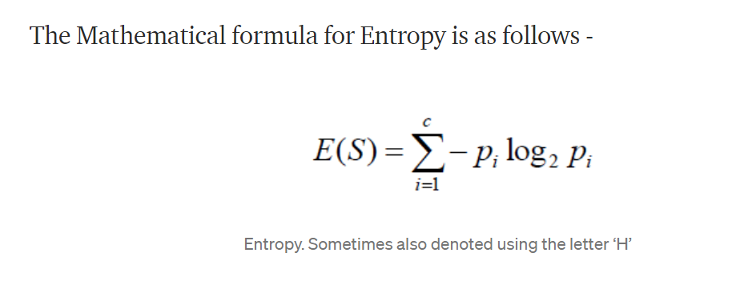
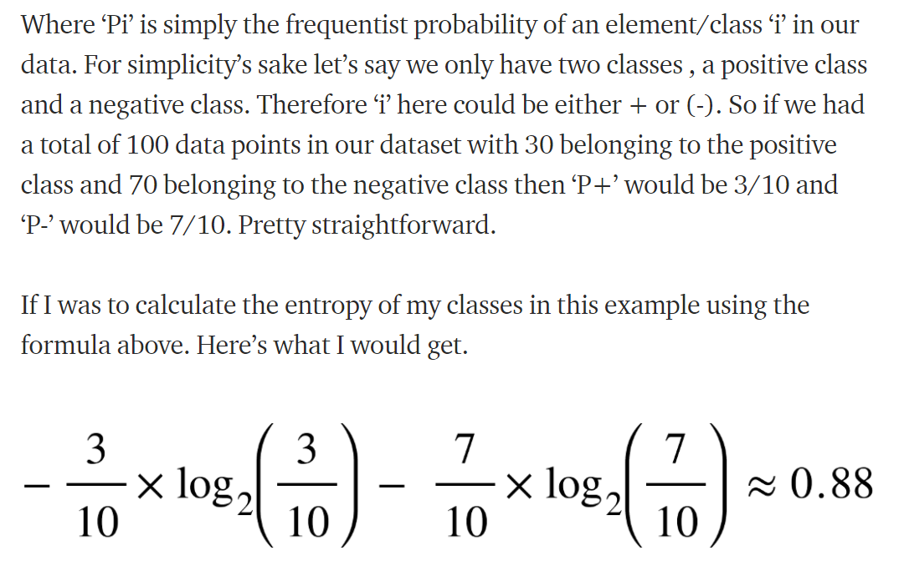

Decision Tree¶
What is decision tree?
Supervised Learning method
Decision support tool that uses a tree-like graph or model of decisions and their possible consequences.
Various variations such as Boosted Decision Tree, Random Forest
Can be used for categorical as well as continuous variables.
Statement of the Problem- Predict whether income exceeds $50K/yr based on census data. OR To determine whether a person makes over 50K a year or not.
To download the data, Please follow the link(https://archive.ics.uci.edu/ml/datasets/adult)
#Import Libraries
import pandas as pd
#Read dataset
data=pd.read_csv('04+-+decisiontreeAdultIncome.csv')
data
| age | wc | education | marital status | race | gender | hours per week | IncomeClass | |
|---|---|---|---|---|---|---|---|---|
| 0 | 38 | Private | HS-grad | Divorced | White | Male | 40 | <=50K |
| 1 | 28 | Private | Bachelors | Married | Black | Female | 40 | <=50K |
| 2 | 37 | Private | Masters | Married | White | Female | 40 | <=50K |
| 3 | 31 | Private | Masters | Never-married | White | Female | 50 | >50K |
| 4 | 42 | Private | Bachelors | Married | White | Male | 40 | >50K |
| ... | ... | ... | ... | ... | ... | ... | ... | ... |
| 19782 | 53 | Private | Masters | Married | White | Male | 40 | >50K |
| 19783 | 22 | Private | Some-college | Never-married | White | Male | 40 | <=50K |
| 19784 | 40 | Private | HS-grad | Married | White | Male | 40 | >50K |
| 19785 | 58 | Private | HS-grad | Widowed | White | Female | 40 | <=50K |
| 19786 | 22 | Private | HS-grad | Never-married | White | Male | 20 | <=50K |
19787 rows × 8 columns
Description about the data set and features
age: continuous.
workclass: Private, Self-emp-not-inc, Self-emp-inc, Federal-gov, Local-gov, State-gov, Without-pay, Never-worked.
fnlwgt: continuous.
education: Bachelors, Some-college, 11th, HS-grad, Prof-school, Assoc-acdm, Assoc-voc, 9th, 7th-8th, 12th, Masters, 1st-4th, 10th, Doctorate, 5th-6th, Preschool.
education-num: continuous.
marital-status: Married-civ-spouse, Divorced, Never-married, Separated, Widowed, Married-spouse-absent, Married-AF-spouse.
occupation: Tech-support, Craft-repair, Other-service, Sales, Exec-managerial, Prof-specialty, Handlers-cleaners, Machine-op-inspct, Adm-clerical, Farming-fishing, Transport-moving, Priv-house-serv, Protective-serv, Armed-Forces. relationship: Wife, Own-child, Husband, Not-in-family, Other-relative, Unmarried.
race: White, Asian-Pac-Islander, Amer-Indian-Eskimo, Other, Black.
sex: Female, Male.
capital-gain: continuous.
capital-loss: continuous.
hours-per-week: continuous.
native-country: United-States, Cambodia, England, Puerto-Rico, Canada, Germany, Outlying-US(Guam-USVI-etc), India, Japan, Greece, South, China, Cuba, Iran, Honduras, Philippines, Italy, Poland, Jamaica, Vietnam, Mexico, Portugal, Ireland, France, Dominican-Republic, Laos, Ecuador, Taiwan, Haiti, Columbia, Hungary, Guatemala, Nicaragua, Scotland, Thailand, Yugoslavia, El-Salvador, Trinadad&Tobago, Peru, Hong, Holand-Netherlands.
data.age.unique()
array([38, 28, 37, 31, 42, 23, 32, 40, 59, 56, 19, 39, 49, 20, 45, 30, 21,
24, 25, 57, 53, 44, 18, 47, 50, 43, 41, 48, 29, 36, 79, 27, 52, 46,
33, 34, 76, 55, 22, 70, 51, 35, 26, 60, 90, 54, 65, 58, 64, 61, 62,
66, 74, 67, 71, 63, 78, 69, 73, 68, 77, 75, 17, 80, 72, 81, 83, 84,
85, 82, 88, 86])
data.wc.unique()
array([' Private', ' Local-gov', ' Federal-gov', ' Never-worked'],
dtype=object)
data.education.unique()
array([' HS-grad', ' Bachelors', ' Masters', ' Some-college',
' Doctorate', ' Prof-school', ' Preschool'], dtype=object)
data.race.unique()
array([' White', ' Black', ' Other', ' Asian-Pac-Islander',
' Amer-Indian-Eskimo'], dtype=object)
data.gender.unique()
array([' Male', ' Female'], dtype=object)
data.IncomeClass.unique()
array([' <=50K', ' >50K'], dtype=object)
#Check null values
data.isnull().sum(axis=0)
age 0
wc 0
education 0
marital status 0
race 0
gender 0
hours per week 0
IncomeClass 0
dtype: int64
#Check the data types
data.dtypes
age int64
wc object
education object
marital status object
race object
gender object
hours per week int64
IncomeClass object
dtype: object
#Create dummy variables
data_prep=pd.get_dummies(data,drop_first=True)
data_prep
| age | hours per week | wc_ Local-gov | wc_ Never-worked | wc_ Private | education_ Doctorate | education_ HS-grad | education_ Masters | education_ Preschool | education_ Prof-school | education_ Some-college | marital status_ Never-married | marital status_ Widowed | marital status_Married | race_ Asian-Pac-Islander | race_ Black | race_ Other | race_ White | gender_ Male | IncomeClass_ >50K | |
|---|---|---|---|---|---|---|---|---|---|---|---|---|---|---|---|---|---|---|---|---|
| 0 | 38 | 40 | 0 | 0 | 1 | 0 | 1 | 0 | 0 | 0 | 0 | 0 | 0 | 0 | 0 | 0 | 0 | 1 | 1 | 0 |
| 1 | 28 | 40 | 0 | 0 | 1 | 0 | 0 | 0 | 0 | 0 | 0 | 0 | 0 | 1 | 0 | 1 | 0 | 0 | 0 | 0 |
| 2 | 37 | 40 | 0 | 0 | 1 | 0 | 0 | 1 | 0 | 0 | 0 | 0 | 0 | 1 | 0 | 0 | 0 | 1 | 0 | 0 |
| 3 | 31 | 50 | 0 | 0 | 1 | 0 | 0 | 1 | 0 | 0 | 0 | 1 | 0 | 0 | 0 | 0 | 0 | 1 | 0 | 1 |
| 4 | 42 | 40 | 0 | 0 | 1 | 0 | 0 | 0 | 0 | 0 | 0 | 0 | 0 | 1 | 0 | 0 | 0 | 1 | 1 | 1 |
| ... | ... | ... | ... | ... | ... | ... | ... | ... | ... | ... | ... | ... | ... | ... | ... | ... | ... | ... | ... | ... |
| 19782 | 53 | 40 | 0 | 0 | 1 | 0 | 0 | 1 | 0 | 0 | 0 | 0 | 0 | 1 | 0 | 0 | 0 | 1 | 1 | 1 |
| 19783 | 22 | 40 | 0 | 0 | 1 | 0 | 0 | 0 | 0 | 0 | 1 | 1 | 0 | 0 | 0 | 0 | 0 | 1 | 1 | 0 |
| 19784 | 40 | 40 | 0 | 0 | 1 | 0 | 1 | 0 | 0 | 0 | 0 | 0 | 0 | 1 | 0 | 0 | 0 | 1 | 1 | 1 |
| 19785 | 58 | 40 | 0 | 0 | 1 | 0 | 1 | 0 | 0 | 0 | 0 | 0 | 1 | 0 | 0 | 0 | 0 | 1 | 0 | 0 |
| 19786 | 22 | 20 | 0 | 0 | 1 | 0 | 1 | 0 | 0 | 0 | 0 | 1 | 0 | 0 | 0 | 0 | 0 | 1 | 1 | 0 |
19787 rows × 20 columns
#Create the X and Y variables
X=data_prep.iloc[:,:-1]
Y=data_prep.iloc[:,-1]
#Create Train and Test dataset
#Split the X and Y datset into training and testing set
from sklearn.model_selection import train_test_split
X_train, X_test, Y_train, Y_test= train_test_split(X,Y, test_size=0.3,random_state=1234, stratify=Y)
from sklearn.tree import DecisionTreeClassifier
sklearn.tree.DecisionTreeClassifier-Parameters
max_depth- max depth of the tree
min_samples_split- min samples required for the split
min_samples_leaf- min samples required at the leaf
max_leaf_nodes- max number of leaf nodes
splitter- Split strategy for best features or randon features
How to decide which feature has the best split? Entropy is as one of the criteria and ectropy basically measures the diversity or impurity of the data. If things are more ordered, then we will say it has leass diversity, whereas those without any order and randomly scattered are supposed to be impure or will have high entropy. Our aim here is to get lower entropy values.

 The entropy here is approximately 0.88. This is considered a high entropy , a high level of disorder ( meaning low level of purity). Entropy is measured between 0 and 1.(Depending on the number of classes in your dataset, entropy can be greater than 1 but it means the same thing , a very high level of disorder.
The x-axis measures the proportion of data points belonging to the positive class in each bubble and the y-axis axis measures their respective entropies. Right away, you can see the inverted ‘U’ shape of the graph. Entropy is lowest at the extremes, when the bubble either contains no positive instances or only positive instances. That is, when the bubble is pure the disorder is 0. Entropy is highest in the middle when the bubble is evenly split between positive and negative instances. Extreme disorder , because there is no majority.


 According to entropy, credit history has low value of entropy so we can take credit hisort to predict the model.
According to entropy, credit history has low value of entropy so we can take credit hisort to predict the model.
The second criteria is known as Gini. It ia a measure for equality in economics.
 The credit history has lower Gini Value.
The credit history has lower Gini Value.
Information Gain-

max_features-
presort
criterion
min_impurity_decrease
#Import Decision Tree classifier from sklearn
from sklearn.tree import DecisionTreeClassifier
#Train the model
dtc= DecisionTreeClassifier(random_state=1234)
dtc.fit(X_train, Y_train)
DecisionTreeClassifier(random_state=1234)
Y_predict=dtc.predict(X_test)
Y_predict
array([0, 0, 0, ..., 0, 0, 0], dtype=uint8)
#Evaluate the model
from sklearn.metrics import confusion_matrix
cm=confusion_matrix(Y_test, Y_predict)
cm
array([[3814, 559],
[ 800, 764]])
score=dtc.score(X_test, Y_test)
score
0.7710965133906014